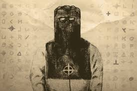
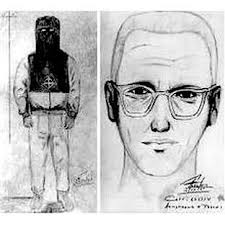
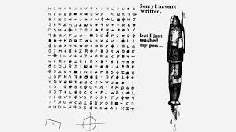
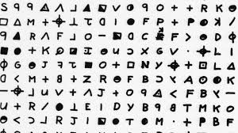
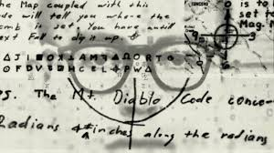

THE ZODIAC KILLER

The Zodiac Killer or simply Zodiac is the pseudonym of an unidentified American serial killer who operated in Northern California from at least the late 1960s to the early 1970s. The killer originated the name in a series of taunting letters and cards sent to the local Bay Area press. The letters included four cryptograms (or ciphers). Of the four cryptograms sent, only one has been definitively solved.He murdered five known victims in Benicia, Vallejo, Napa County, and San Francisco respectively between December 1968 and October 1969. He targeted young couples, with two of the men surviving attempted murder. He also murdered a male cab driver. The Zodiac himself once claimed to have murdered 37 victims.

Since then, the case has remained open although numerous people have claimed they know the identity of the killer. This includes Dennis Kaufman who believes it was his stepfather Jack Tarrance and Gary Stewart who believes his biological father Earl Van Best was the Zodiac killer, CNN reported.What made the case so fascinating, though, was the way he toyed with police and reporters. He called in several of the murders and began to send coded letters to newspapers, using a cross within a circle as his symbol. At one point, he mailed in a piece of bloodied shirt to prove he was who he claimed to be. Another time, he threatened to shoot up a school bus full of children. The investigation went on for years. Several suspects were considered and questioned, but to no avail.

Some of the interesting murders are-:
1. Lake Herman Road murders-:
The first murders widely attributed to the Zodiac Killer were the shootings of high school students Betty Lou Jensen and David Faraday on December 20, 1968, on Lake Herman Road, just inside Benicia city limits. The couple were on their first date and planned to attend a Christmas concert at Hogan High School about three blocks from Jensen's home. The couple instead visited a friend before stopping at a local restaurant and then driving out on Lake Herman Road. At about 10:15 p.m., Faraday parked his mother's Rambler in a gravel turnout, which was a well-known lovers' lane. Shortly after 11:00 p.m., their bodies were found by Stella Borges, who lived nearby. The Solano County Sheriff's Department investigated the crime but no leads developed.
2. Blue Rock Springs murder-:
Just before midnight on July 4, 1969, Darlene Ferrin and Michael Mageau drove into the Blue Rock Springs Park in Vallejo, four miles (6.4 km) from the Lake Herman Road murder site, and parked. While the couple sat in Ferrin's car, a second car drove into the lot and parked alongside them but almost immediately drove away.The killer directed the flashlight into Mageau's and Ferrin's eyes before shooting at them, firing five times. Both victims were hit, and several bullets had passed through Mageau and into Ferrin. The killer walked away from the car but upon hearing Mageau's moaning, returned and shot each victim twice more before driving off.
3. Murder of Paul Stine-:
Two weeks later on October 11, 1969, a white male passenger entered the cab driven by Paul Stine at the intersection of Mason and Geary Streets (one block west from Union Square) in San Francisco requesting to be taken to Washington and Maple Streets in Presidio Heights. For reasons unknown, Stine drove one block past Maple to Cherry Street; the passenger then shot Stine once in the head with a 9mm, took Stine's wallet and car keys, and tore away a section of Stine's bloodstained shirt tail.This shirt was later sent to the police department by the zodiac in order to proove that he was real.

The prime suspect of the murders was Arthur Leigh Allen. Allen had been interviewed by police from the early days of the Zodiac investigations and was the subject of several search warrants over a 20-year period. In 2007 Graysmith noted that several police detectives described Allen as the most likely suspect.However, in 2010, Toschi stated that all the evidence against Allen ultimately "turned out to be negative."

As far as the police are concerned, there were two main suspects as of 2017 — Ross Sullivan and Lawrence Kane. Fox News reported that the librarian and Navy veteran had some red flags, making them persons of interest. It seems, however, that new suspects and claims are always popping up — but police have yet to make an arrest.
But afterall some questions still previal and might not be ever answered....like..(MindHunting Questions)
1. Why in most of the murders he/she fired 5-10 times at the victim...???
2. Was he a psycopath...who mostly hated the couples...???
3. Does the legacy of the zodiac killer still prevails....???